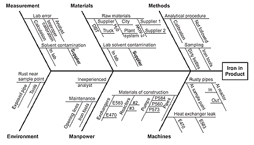

MBA 511 Final Exam Study Guide
Calculating averages
Simple moving average
In other words, the average of the N most recent items
Weighted moving average
Exponential Smoothing
 The exponentially smoothed forecast for period t
The exponentially smoothed forecast for period t
The exponentially smoothed forecast made for the prior period
The actual demand in the prior period
The desired response rate, or smoothing constant
Little's Law
Where L is Average number of customers in the store
is the effective arrival rate
W is Average time customer spends in store
Chapter 01
Quicker payments will reduce the average amount of accounts receivables, so the receivables turnover ratio will increase.
Chapter 4 Critical Path Method
- Top left - Early Start
- Top right - Early Finish
- Bottom left - Late Start
- Bottom right - Late Finish
First propagate through the early starts. Once that is calculated, use back propagation to determine late start.
Late Start - Early Start = Slack Time
Any path with 0 slack time is part of the critical path

Chapter 10 Waiting Line Analysis and Simulation
Phases and Channels
- Single channel, Single phase
- Only one line, only one station
- Typical example is a single chair barbershop
- Single channel, Multi phase
- Only one line, multiple stations
- Typical example is a car wash
- Users move through vacuums, wetting, washing, rinsing, ect.
- Multichannel, single phase
- Multiple lines to go through, but each station provides only a single stop
- Typical example is a bank teller
- A bank has multiple tellers, but a customer will only visit a single teller
- Multichannel, multiphase
- Multiple lines for multiple services. Similar to a bank teller, except multiple stations.
- Typical example is a hospital admission.
- User must go to triage, insurance, reception, ect. and multiple help desks exist
Examples of working line problems start on page 231 of the textbook
Chapter 12 Six Sigma
Methodology
- Define (D)
- Identify customers and their priorities.
- Identify a project suitable for Six Sigma efforts based on business objectives as well as customer needs and feedback.
- Identify critical-to-quality characteristics (CTQs) that the customer believes have the most impact on quality.
- Measure (M)
- Determine how to measure the process and how it is performing.
- Identify the key internal process that influence CTQs and measure the defects currently generated relative to those processes.
- Analyze (A)
- Determine the most likely causes of defects.
- Understand why defects are generated by identifying the key variables most likely to create process variation.
- Improve (I)
- Identify means to remove the cause of defects
- Confirm the key variables and quantify their effects on the CTQs.
- Identify the maximum acceptance ranges of the key variables and a system for measuring deviations of the variables.
- Modify the process to stay within an acceptable range.
- Control (C)
- Determine how to maintain the improvements
- Put tools in place to ensure that the key variables remain within the maximum acceptance ranges under the modified process.
Six sigma charts
Chart examples are on page 305 of the textbook
-
Flow Charts
- Used in the define stage of a product
-
Run charts
- Depict trends over time and help in the define stage
-
Pareto charts
- These charts help to break down a problem into the relative contributions of its components, based on the idea that 80% of problems are caused by 20% of causes
-
Checksheets
- These are basic forms that help standardize data collections.
-
Fishbone (aka Cause and Effect Diagram)
- To construct, start with a why? question. Why are pizza deliveries late on Friday and Saturday nights?
- The rest consists of lines drawn across the page, attached to the problem statement, and several lines or "bones" coming out vertically from the main line.
Fishbone diagram example

Chapter 13 Quality Control
P-charts
Used when a product is either good or it is bad

Standard deviation

UCL

LCL

z is confidence rating. A typical value is  (99.7% confidence) or (99% confidence)
(99.7% confidence) or (99% confidence)
C-charts
Used when the product can have multiple defects; such as a board of lumber with more than one knot
Average number of defects per unit
Standard deviation

UCL
UCL = 
LCL
LCL =  or 0, whichever is greater
or 0, whichever is greater
Same typical z values as p-charts
X-Bar and R-Charts
Used when taking samples that must fall within an acceptable range
See Page 329 of the textbook
| Number of observations in each sample | |||
|---|---|---|---|
| 2 | 1.88 | 0 | 3.27 |
| 3 | 1.02 | 0 | 2.57 |
| 4 | 0.73 | 0 | 2.28 |
| 5 | 0.58 | 0 | 2.11 |
| 6 | 0.48 | 0 | 2.00 |
| 7 | 0.42 | 0.08 | 1.92 |
| 8 | 0.37 | 0.14 | 1.86 |
| 9 | 0.34 | 0.18 | 1.82 |
| 10 | 0.31 | 0.22 | 1.78 |
| 11 | 0.29 | 0.26 | 1.74 |
| 12 | 0.27 | 0.28 | 1.72 |
| 13 | 0.25 | 0.31 | 1.69 |
| 14 | 0.24 | 0.33 | 1.67 |
| 15 | 0.22 | 0.35 | 1.65 |
| 16 | 0.21 | 0.36 | 1.64 |
| 17 | 0.20 | 0.38 | 1.62 |
| 18 | 0.19 | 0.39 | 1.61 |
| 19 | 0.19 | 0.40 | 1.60 |
| 20 | 0.18 | 0.41 | 1.59 |
Upper control limit for
Lower control limit for
Upper control limit for
Lower control limit for
Chapter 23 Theory of Constraints
Eli Goldratt in his book The Goal observed that improving flow time through a resource that was not a bottleneck would not improve over all production time.
Goldratt's Rules of Production Scheduling
- Do not balance capacity - balance the flow
- The level of utilization of a nonbottleneck resource is determined not by its own potential but by some other constraint in the system.
- Utilization and activation of a resource are not the same.
- An hour lost at a bottleneck is an hour lost for the entire system
- An hour saved at a nonbottleneck is a mirage.
- Bottlenecks govern both throughput and inventory in the system.
- The transfer batch may not, and many times should not, be equal to the process batch.
- A process batch should be variable both along its route and in time.
- Priorities can be set only by examining the system's constraints. Lead time is a derivative of the schedule.